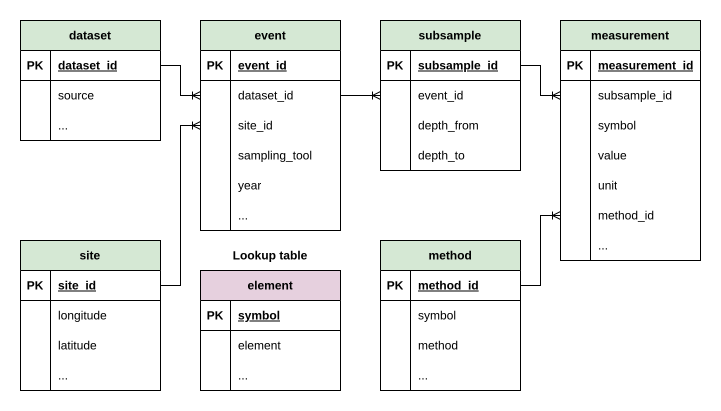

DB Schema (Slim)
A common database schema for multi-source sediment trace-element data
The slim schema is a common seven-table schema shared by all five sources. The core structure (table set, primary/foreign keys, and the columns needed for the trace-element analysis) is identical everywhere. Around that core, each source keeps a handful of source-specific columns that carry information only that source provides (extra identifiers, detection flags, reporting basis, and so on).
This page shows the entity-relationship diagram and, for every table, a per-source column comparison. A filled dot (●) means the column is present in that source’s slim database.
Schema diagram
The hierarchy flows from dataset and site through event and subsample down to measurement. The element table is a lookup for both method and measurement via the symbol key.

The symbol column in measurement is an intentional denormalisation: it is derivable via method_id → method.symbol but retained as a key for query efficiency.
element
Lookup table mapping chemical symbols to element names.
| Column | Type | Key | Mareano | Vannmiljø | ICES-DOME | MUDAB | 4Demon | Description |
|---|---|---|---|---|---|---|---|---|
| symbol | TEXT | PK | ● | ● | ● | ● | ● | Chemical symbol (e.g., CO, CU); FK target for method and measurement. |
| element | TEXT | ● | ● | ● | ● | ● | Full element name (e.g., Cobalt, Copper). | |
| cas_no | TEXT | ● | ● | CAS registry number. |
dataset
A data-collection campaign or source contribution.
| Column | Type | Key | Mareano | Vannmiljø | ICES-DOME | MUDAB | 4Demon | Description |
|---|---|---|---|---|---|---|---|---|
| dataset_id | INTEGER | PK | ● | ● | ● | ● | ● | Unique dataset identifier. |
| source | TEXT | ● | ● | ● | ● | ● | Source database name (e.g., Mareano). | |
| dataset_name | TEXT | ● | ● | ● | ● | ● | Name of the data-collection campaign / dataset. | |
| country | TEXT | ● | ● | ● | ● | Country of origin. | ||
| institute | TEXT | ● | ● | ● | Institute responsible for the data. | |||
| dataset_code | TEXT | ● | ● | Source-native dataset code. | ||||
| dataset_group | TEXT | ● | Dataset grouping (MUDAB). | |||||
| region | TEXT | ● | Marine region. | |||||
| institute_code | TEXT | ● | Institute code. |
site
Unique geographic locations, keyed on latitude/longitude rounded to three decimal places.
| Column | Type | Key | Mareano | Vannmiljø | ICES-DOME | MUDAB | 4Demon | Description |
|---|---|---|---|---|---|---|---|---|
| site_id | INTEGER | PK | ● | ● | ● | ● | ● | Unique site identifier. |
| latitude | REAL | ● | ● | ● | ● | ● | Latitude in decimal degrees (rounded to 3 d.p.). | |
| longitude | REAL | ● | ● | ● | ● | ● | Longitude in decimal degrees (rounded to 3 d.p.). | |
| country | TEXT | ● | ● | ● | ● | ● | Nearest country. | |
| country_code | TEXT | ● | ● | ● | ● | ● | ISO country code. | |
| dist_to_coast | INTEGER | ● | ● | ● | ● | ● | Distance to nearest coastline (km). | |
| municipality | TEXT | ● | ● | ● | ● | ● | Nearest municipality. | |
| sea_name | TEXT | ● | ● | ● | ● | ● | Name of the sea or ocean body. | |
| depth | REAL | ● | Water depth (m, positive downward). |
event
A single sampling event: one deployment of a sampling tool at a site.
| Column | Type | Key | Mareano | Vannmiljø | ICES-DOME | MUDAB | 4Demon | Description |
|---|---|---|---|---|---|---|---|---|
| event_id | INTEGER | PK | ● | ● | ● | ● | ● | Unique event identifier. |
| dataset_id | INTEGER | FK | ● | ● | ● | ● | ● | → dataset. |
| site_id | INTEGER | FK | ● | ● | ● | ● | ● | → site. |
| sampling_tool | TEXT | ● | ● | ● | ● | ● | Sampling gear code (e.g., BC, MC, GR). | |
| year | INTEGER | ● | ● | ● | ● | ● | Year of the sampling event. | |
| date | TEXT | ● | ● | ● | ● | Date of the sampling event. | ||
| datetime | TEXT | ● | Combined date-time (Vannmiljø). | |||||
| tool_description | TEXT | ● | Human-readable gear description. | |||||
| time | TEXT | ● | Time of the sampling event. |
method
Unique combinations of analytical method, laboratory, and detection/quantification limits per chemical symbol.
| Column | Type | Key | Mareano | Vannmiljø | ICES-DOME | MUDAB | 4Demon | Description |
|---|---|---|---|---|---|---|---|---|
| method_id | INTEGER | PK | ● | ● | ● | ● | ● | Unique method identifier. |
| symbol | TEXT | FK | ● | ● | ● | ● | ● | → element. |
| method | TEXT | ● | ● | ● | ● | ● | Analytical method (e.g., ICP-MS, ICP-AES). | |
| lab | TEXT | ● | ● | ● | Laboratory that performed the analysis. | |||
| lab_name | TEXT | ● | ● | Full laboratory name. | ||||
| lld | REAL | ● | Lower level of detection (Mareano). | |||||
| lod | REAL | ● | ● | ● | Limit of detection. | |||
| loq | REAL | ● | ● | ● | Limit of quantification. | |||
| uncertainty | REAL | ● | Reported measurement uncertainty. | |||||
| method_description | TEXT | ● | ● | Free-text method description. | ||||
| comment | TEXT | ● | Comment on the method / LLD. |
subsample
A discrete depth interval within a sampling event. This table is identical across all five sources.
| Column | Type | Key | Mareano | Vannmiljø | ICES-DOME | MUDAB | 4Demon | Description |
|---|---|---|---|---|---|---|---|---|
| subsample_id | INTEGER | PK | ● | ● | ● | ● | ● | Unique subsample identifier. |
| event_id | INTEGER | FK | ● | ● | ● | ● | ● | → event. |
| depth_from | INTEGER | ● | ● | ● | ● | ● | Top depth of the interval (cm). | |
| depth_to | INTEGER | ● | ● | ● | ● | ● | Bottom depth of the interval (cm). |
measurement
Chemical concentration values per subsample and symbol. This table carries the most source-specific variation, because each source reports its own quality flags, reporting basis, and derived values.
| Column | Type | Key | Mareano | Vannmiljø | ICES-DOME | MUDAB | 4Demon | Description |
|---|---|---|---|---|---|---|---|---|
| measurement_id | INTEGER | PK | ● | ● | ● | ● | ● | Unique measurement identifier. |
| subsample_id | INTEGER | FK | ● | ● | ● | ● | ● | → subsample. |
| symbol | TEXT | FK | ● | ● | ● | ● | ● | → element (denormalised from method). |
| value | REAL | ● | ● | ● | ● | ● | Measured concentration value. | |
| unit | TEXT | ● | ● | ● | ● | ● | Unit of measurement (e.g., mg/kg). | |
| method_id | INTEGER | FK | ● | ● | ● | ● | ● | → method. |
| below_lld | INTEGER | ● | 1 if below the lower level of detection (Mareano). | |||||
| operator | TEXT | ● | Relational operator (<, >, =, ND). | |||||
| filtered | INTEGER | ● | 1 if the sample was filtered. | |||||
| basis | TEXT | ● | ● | ● | Reporting basis (e.g., dry / wet weight). | |||
| matrix | TEXT | ● | ● | ● | Sample matrix / sediment fraction. | |||
| qflag | TEXT | ● | ● | ICES quality flag (<, Q, D, …). | ||||
| vflag | TEXT/INT | ● | ● | Value / validation flag. | ||||
| uncrt | REAL | ● | Measurement uncertainty. | |||||
| metcu | TEXT | ● | Uncertainty method code. | |||||
| dcflag | TEXT | ● | Detection / confirmation flag. | |||||
| corrected_value | REAL | ● | Corrected value (4Demon). | |||||
| fraction_range | TEXT | ● | Grain-size fraction range. | |||||
| limit_flag | INTEGER | ● | 1 if below the limit (4Demon). | |||||
| range_check_flag | INTEGER | ● | Range-validation flag. | |||||
| outlier_extreme_flag | INTEGER | ● | Extreme-value outlier flag. | |||||
| outlier_stdev_flag | INTEGER | ● | Standard-deviation outlier flag. |
Quality-control & marking columns
On top of the structural schema above, the slim quality-control steps append a common set of classification and flag columns. These are identical across all five sources and never overwrite the original values; they only classify or mark records for review or later removal. Their detailed semantics are covered on the Flagging pages.
| Table | Column | Type | Meaning |
|---|---|---|---|
| element | category | TEXT | Measurand class: target / reference / organic / composition. |
| site | area_flag | TEXT | Location flag: outside_europe, else NULL. |
| event | n_layers | INTEGER | Number of subsamples (depth layers) under the event. |
| event | multi_flag | INTEGER | 1 = multi-layer / -core sampling, 0 = single grab. |
| subsample | fe_exist | INTEGER | 1 = an Fe (iron) normaliser measurement is present. |
| subsample | al_exist | INTEGER | 1 = an Al (aluminium) normaliser measurement is present. |
| subsample | org_exist | INTEGER | 1 = an organic-carbon measurement (CORG / TOC) is present. |
| subsample | comp_exist | INTEGER | 1 = a grain-size composition measurement is present. |
| measurement | invalid_flag | TEXT | Value flag: negative / over_range, else NULL. |
| measurement | dup_flag | TEXT | duplicate / technical_replicate, else NULL. |
| measurement | below_loq | INTEGER | 1 = value is below the detection / quantification limit. |
| measurement | value_std | REAL | Standardised value (chemistry mg/kg, composition %), else NULL. |
| measurement | unit_std | TEXT | Unit of value_std: mg/kg or %, else NULL. |
| measurement | range_flag | TEXT | Plausible-range flag: below_min / above_max, else NULL. |
| measurement | below_loq_num | INTEGER | 1 = value below the method’s numeric limit (chemistry only), else 0 / NULL. |
| measurement | weight_basis | TEXT | Sample weight basis of a chemistry value: dry / wet, else NULL. |
Beyond these common columns, some sources carry source-specific columns from the later steps: measurement.src_flag (native quality flags, on Vannmiljø / ICES-DOME / 4Demon); measurement.value_std_corr / gs_corr (corrected grain-size value and its marker, on ICES-DOME / MUDAB / Vannmiljø); and subsample.fines_lt63 / fines_basis (the derived <63µm grain-size fraction, on every source with grain-size, i.e. all but 4Demon). These are documented on the Source Specific and Grain size pages.